Five films
More random rolls from the COVID era
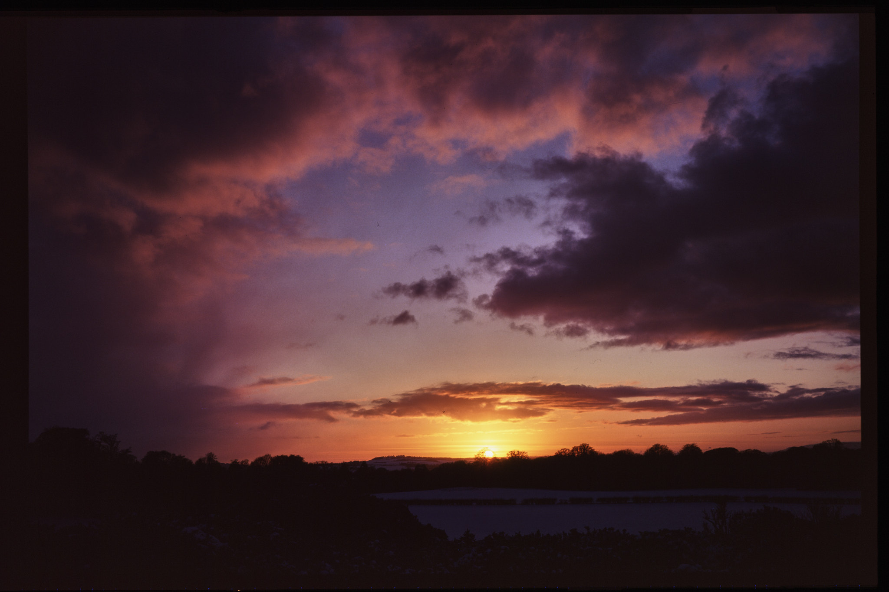 February sunset at Patteismuir
Continuing the series of films I had lost track of this year, there were another five exposed films kicking about with only partial notes and recall to record them. Again, using my new Digitaliza film holders and a new MacBook Air, the scans were interesting. In this series:
| Brand | Type | ISO | Format | Exposures | Camera | Lens |
|---|---|---|---|---|---|---|
| Kodak | Ektachrome E100 | 100 | 120 | 8 | Fuji GW690ii | 90mm |
| Cinestill | 800 T | 800 | 35mm | 36 | Nikon FM | Nikon AI-s 28mm f/2.8 |
| Lomography | Metropolis | EI 400 | 120 | 12 | Hasselblad 503CW | Zeiss 80mm F2.8 C |
| Ilford | Delta | 3200 | 35mm | 36 | Nikon FM | Nikon AI-s 28mm f/2.8 |
| Kodak | Portra | 160 | 35mm | 36 | Nikon FM | Nikon AI-s 28mm f/2.8 |
Ektachrome
I am becoming a big fan of Kodak’s modern slide film: no big surprise, really, because years ago I favoured Kodachrome and Agfa’s transparency film in my Nikon FM. Here, a few frames in the huge Fuji GW690ii 6 x 9 camera taken around Kilconquhar and St Monans around 9th April. Scanned at 3200 dpi, the digital images are about 80 mega pixels in size, although sharpness doesn’t satisfy the pixel-neurotic: it’s colours that make these images worth making.
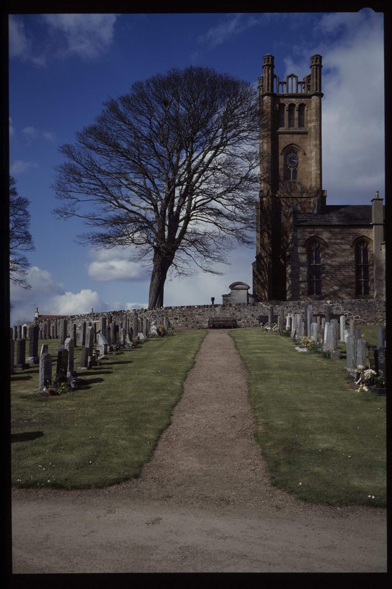 Church at Kilconquhar. Fuji GW690ii, Ektachrome E100
The composition here isn’t perfect: it was tempting to crop out the part-of-a-treee on the left of this picture but there is something in me that wants to crop and adjust as little as possible. I can see what I was thinking with the line of the path central to the composition and am pleased that I kept these parallel to the lines of the church tower. There’s always a bit of difference between what you see in the rangefinder window and the image on the film so I consider this a successful image.
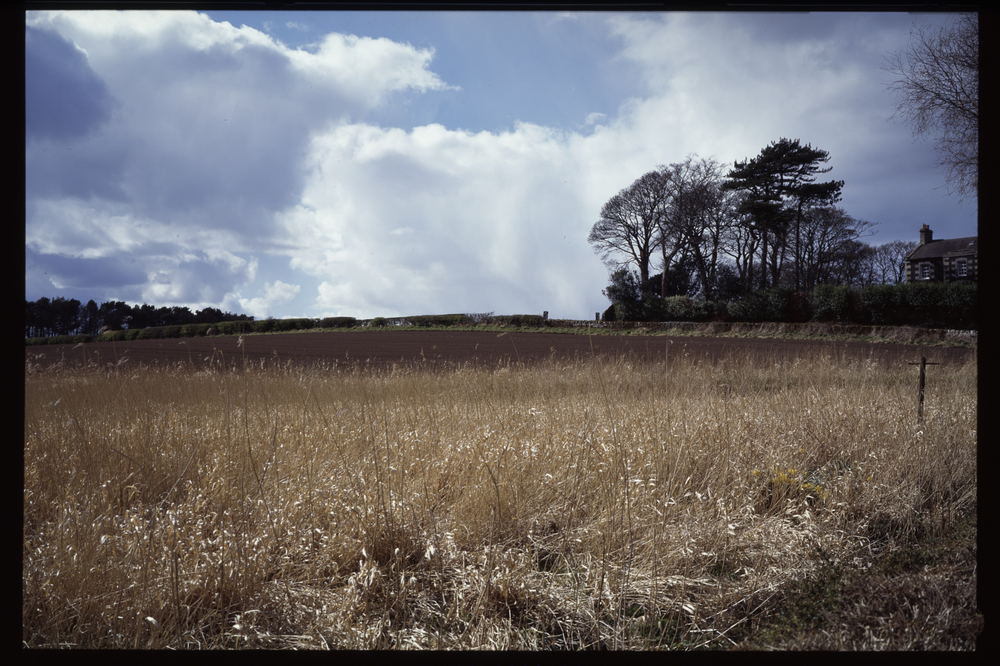 Kilconquhar. Fuji GW690ii, Ektachrome E100
I like the colours in this image taken at the loch, facing in the other direction, a few paces from where I captured the church. The complementary sky and grass tones here work for me. What is most impressive with this film stock is that there is almost no post processing required – the header sunset image taken in February at Pattiesmuir shows this, I think, as well as these snaps from Kilconquhar and St. Monans. Sunlight and good skies are a real bonus too.
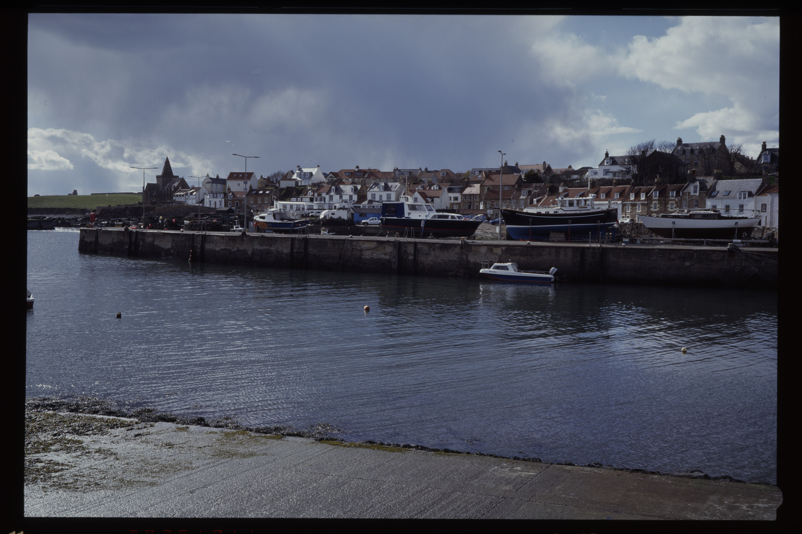 St. Monan’s harbour. Fuji GW690ii, Ektachrome E100
Taken from the walk down to the famous wonky sea wall at St. Monans, this again might have been cropped on the left if it had been a digital capture. I love the two-weather sky here.
Cinestill 800T
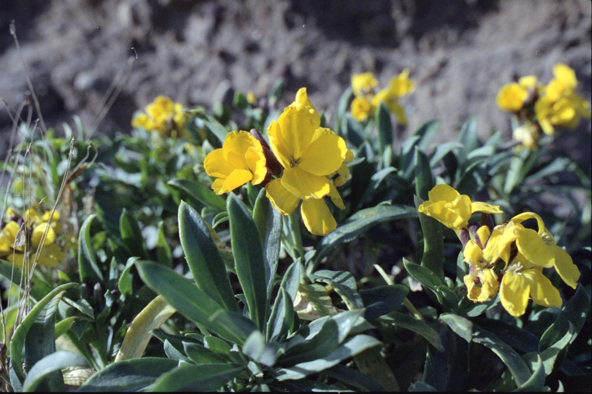 Flowers at Dumbarnie Links, Nikon FM, Cinestill 800T
Cinestill 800T is a fast popular film stock, with the “T” indicating that it is designed to be used in tungsten light. It’s ideal for shooting urban scenes at night, which was my intention when I bought a few rolls of 135 and 120 at the beginning of 2021. This first roll was exposed in April in a Nikon FM in daylight at Seafield Beach, Dumbarnie Links (frames 16–25) and Elie (frames 26ff). Scanning as before, I processed them in Capture One, severely adjusting white balance and contrast to compensate for the blue shift of the abused film.
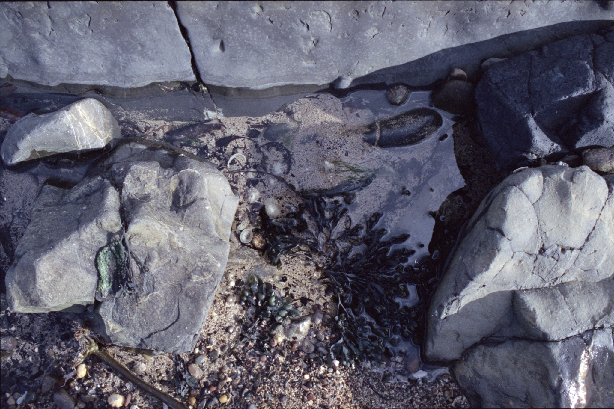 Seafield Beach. Nikon FM, Cinestill 800T
This seemed to do the trick, rendering colours realistically with only two slider adjustments off the scanner. I’m learning to not allow the scanner to do anything with the colour of the files it creates. The above image of flowers at Dumbarnie Links illustrates this.
I’m generally pleased with the results if not a little meh about my collection of dead boring images. Cinestill 800T is an exciting film to use for exciting images: punchy urban scenes evocative of some other era or dark filmic concepts. It’s not really meant for landscapes taken on walks, the purpose of which was not photography but clearing heads. I hope my next set of images with this film stock will do it better justice.
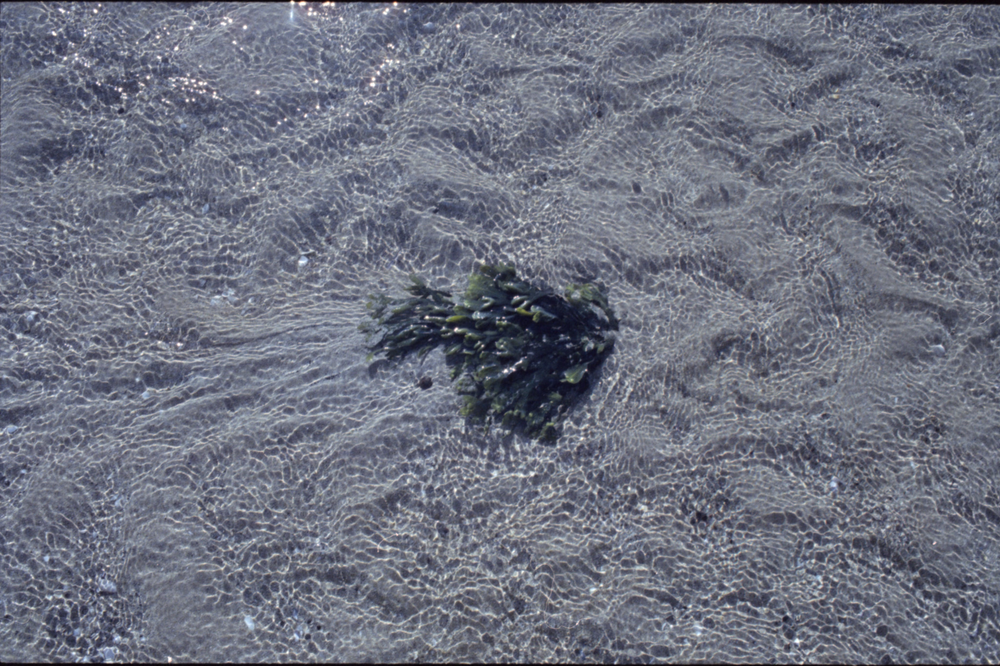 Elie Beach. Nikon FM, Cinestill 800T
I do like the rendering of contrast and tone in this film, once adjusted. Below, Lady’s Tower on a sunny day in Fife gives the film a chance to show this to create a nice image that evokes the feeling of the moment it was captured. More than that, I guess, can’t be asked for.
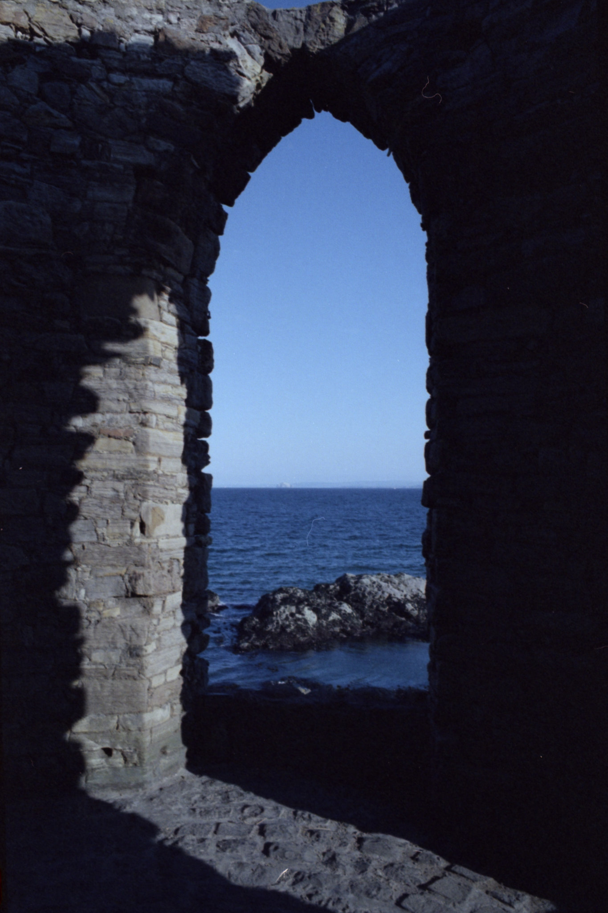 Lady’s Tower, Elie. Nikon FM, Cinestill 800T
Lomography Metropolis
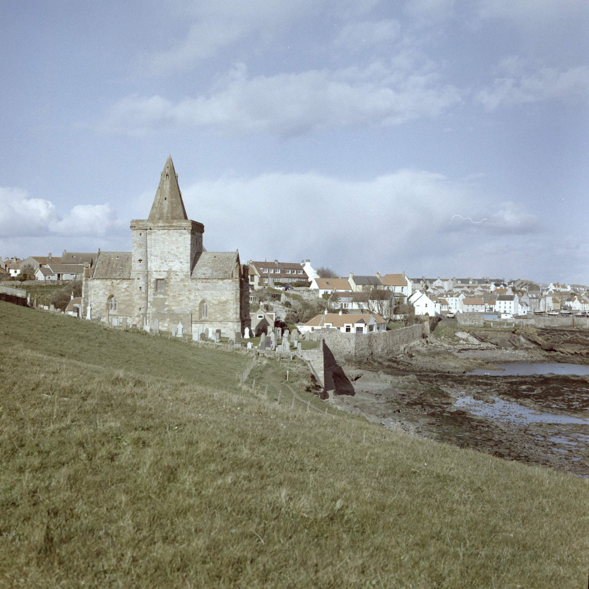 St. Monans, Fife. Hasselblad 503CW, 80mm Zeiss.
This film stock was introduced in 2019 as a new film emulsion with extended range, meaning that the sensitivity is stated on the box as ISO 100 – 400 and you take your pick. I exposed this roll at the higher speed to see how it worked there. As with all of the films in this mini-series, I got AG Photographic to develop them for me.
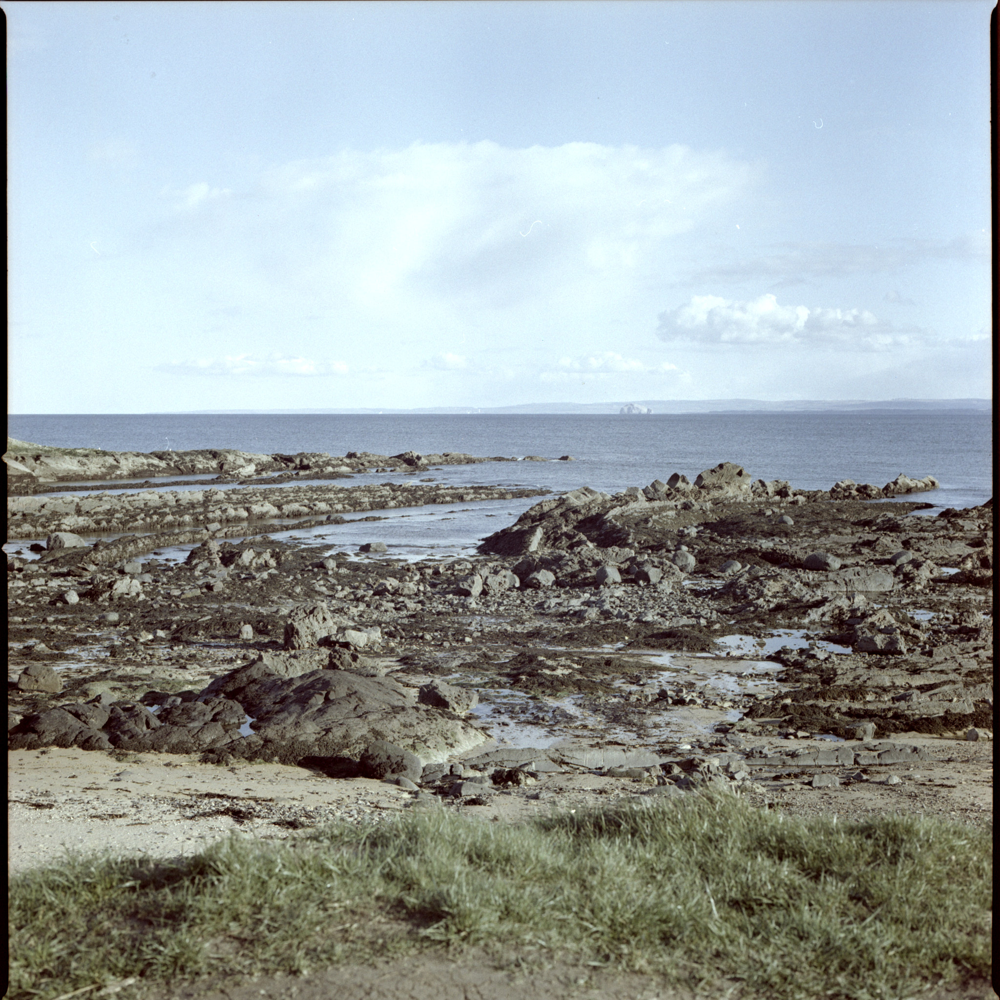 Bass Rock from Crail. Hasselblad 503CW, 80mm Zeiss.
I first scanned this roll using 48-bit colour and 6400 dpi settings which produced square image files post-processing of about 180 megapixels. The colours are muted and cool. It took some time to find the correct white balance adjustment in Capture One but I think the image of St Monans church in Fife is a fair rendition of the film’s character. I like that the contrast is strong. You will not see the Hasselblad notches in that image because, as with many of my hand-held photographs, the horizon was a bit squint, as they say around here, so I had to adjust it and crop.
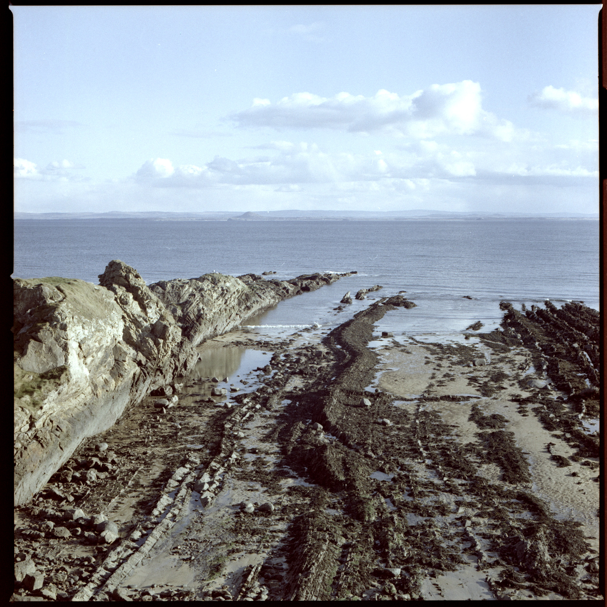 Crail, Fife. Hasselblad 503CW, 80mm Zeiss.
This was the last useful frame off the roll, as some time later, during a visit to the Hermitage at Dunkeld, I reached for the Hasselblad and forgot there was film in it. Sheer stupidity caused me to open the film back to load a new film without first checking the clever mechanical indicator on the cartridge. I’m going to say that I will not do that again but then again I also say that my next car will be a Maserati.
Ilford Delta 3200
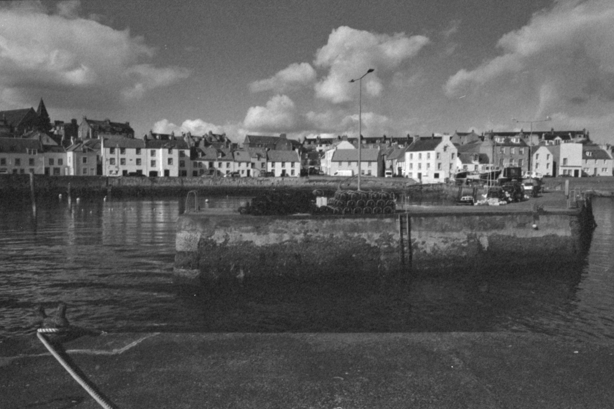 St.Monans Harbour. Nikon FM, 28mm f/1.4 AiS
As this is a black and white film, I might have developed this myself but as with all of the films in this mini-series, I got AG Photographic to develop it for me. It was scanned at 6400, then 3200 dpi in 24-bit colour (otherwise the scanner screws up the colour profile in the output file). In post-processing, the profile is switched to black and white. The early images were not of good enough resolution to justify 6400 dpi, hence the switch to something lower.
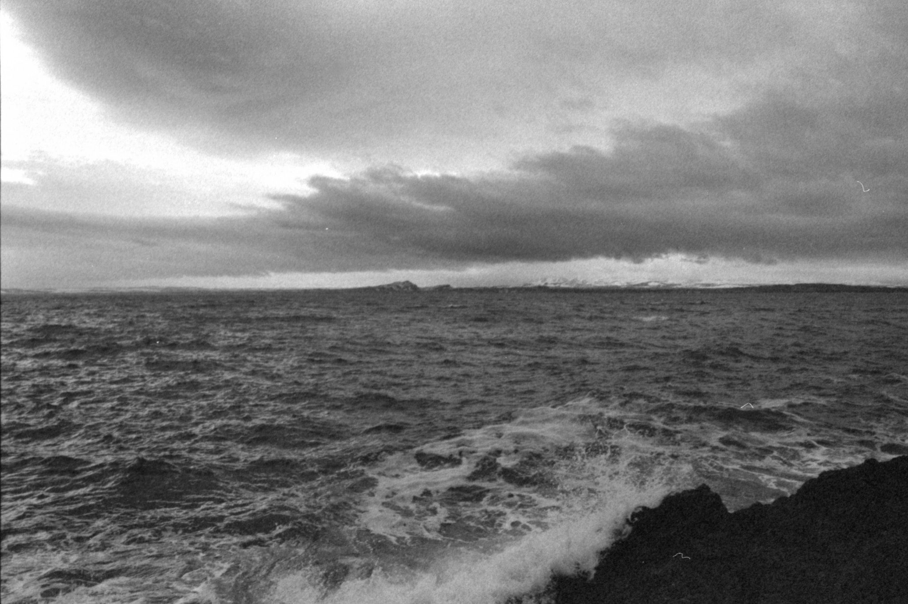 Edinburgh, from Fife. Nikon FM, 28mm f/1.4 AiS
Most of those early frames were quite disappointing, being underexposed and losing detail in the shadows. I’m fairly sure this was a metering issue: I rely on the built-in LED through-the-lens metering when shooting with the Nikon FM and this might be the price of laziness. Some can be recovered, though, and this image shows a sort of moody shoreline to illustrate the point.
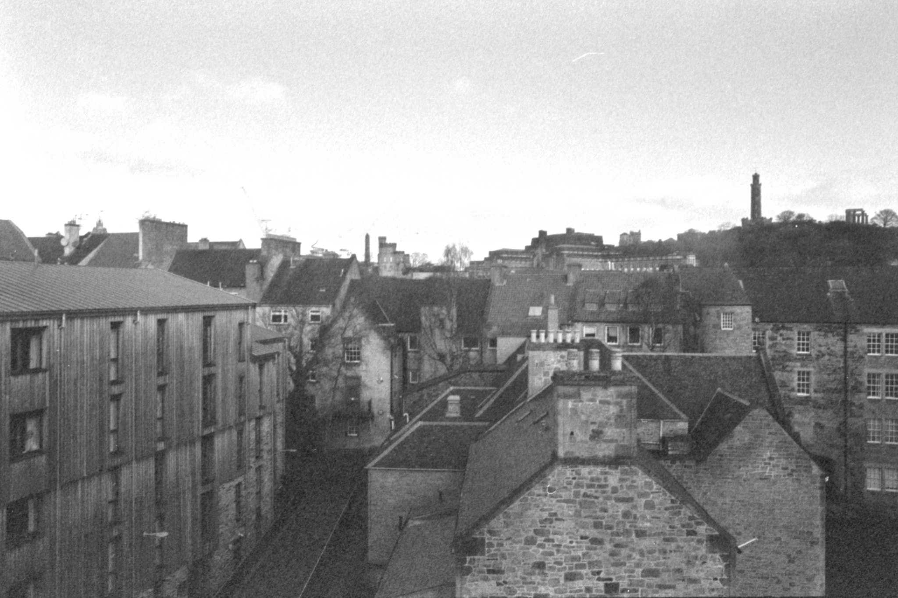 Edinburgh. Nikon FM, 28mm f/1.4 AiS
This is the view from my office window on the Holyrood campus. Delta 3200 might suggest a good low-light film but I think it’s more fast than it is good in the dark. It needs light to function properly. The next image also, perhaps, is more suited to the grainy emulsion of Delta 3200.
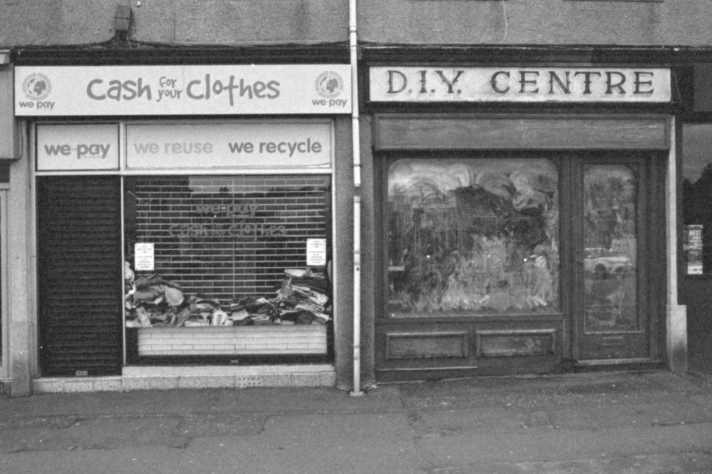 The Palace, Rosyth. Nikon FM, 28mm f/1.4 AiS
Something more urban in flavour demands not only monochrome but also the character of a grainy film stock like this. I don’t think it handles wide dynamic range the way I had hoped, however. Shooting into the light is probably not the best idea:
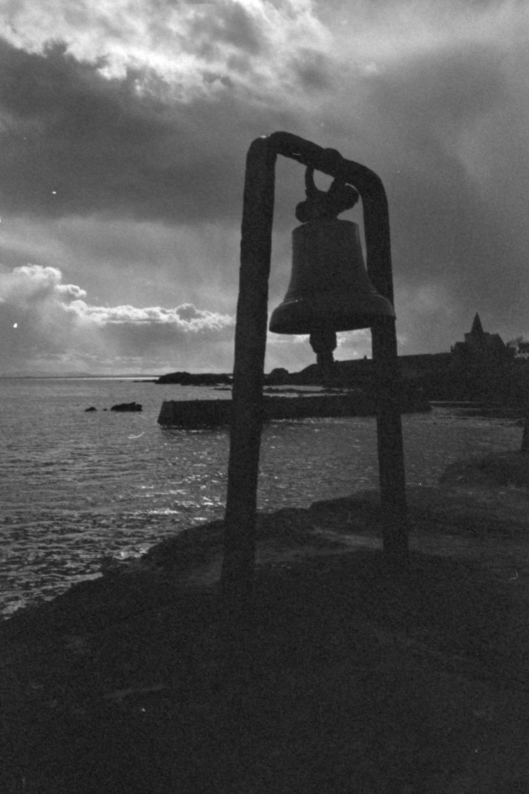 Harbour Bell, St.Monans. Nikon FM, 28mm f/1.4 AiS
Delta 3200 can perform well with good light, and yield decent contrasty images if you meter and expose correctly.
Kodak Portra 160
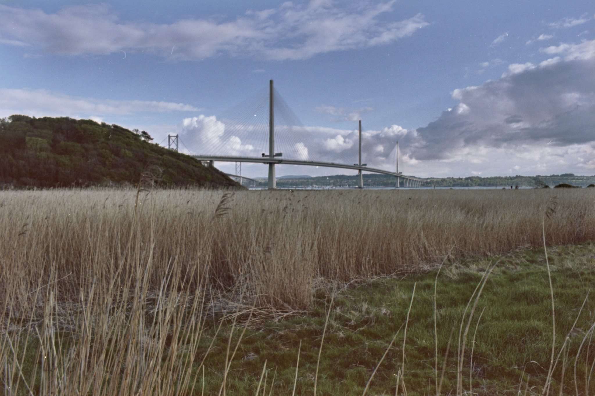 Queensferry Crossing from St. Margaret’s Marsh
I scanned most of these at 3200 or 4800 dpi in 48-bit colour with the scanner’s colour handling switch off. The first few frames were taken at the Hermitage, near Dunkeld, during a weekend run up to one of our favourite places in May. We needed reflection time and the COVID restrictions were just so that we could do the right thing as we did The Right Thing for us.
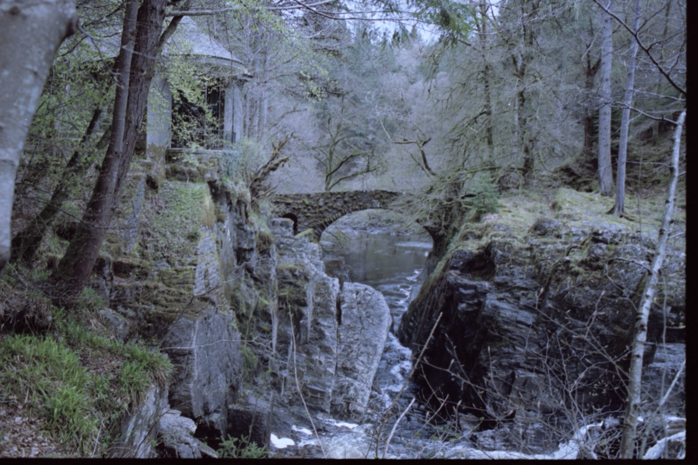 Ossian’s Hall. Nikon FM, 28mm f/1.4 AiS
The Dunkeld weekend was not in the brightest of sunshine and that tends to wash out the colours in Portra, I think. This is a dark and moody kind of place when it’s overcast, so the image above does portray that. No marks for composition – there’s a better portrait version but that favours the bridge over the hall and I wanted to show that in this post.
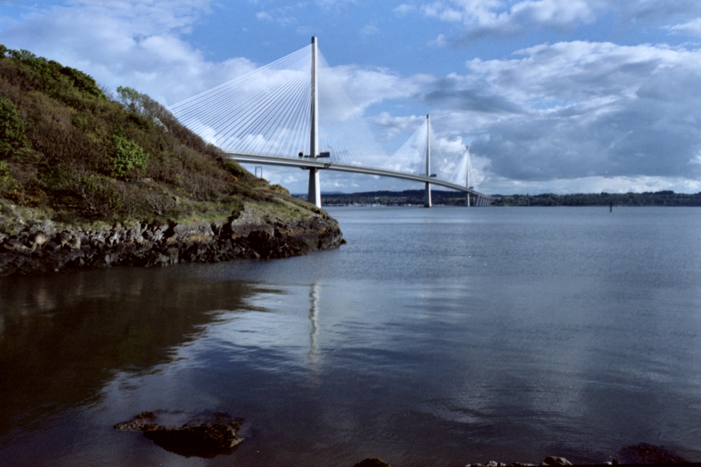 Queensferry Crossing from St. Margaret’s Marsh
There was better light when we walked on the Forth Shore at St. Margaret’s Marsh, between the bridges and the dockyard. Some while later, we were at Loch Lubnaig where the colours of the greenery dominate the images taken with this film.
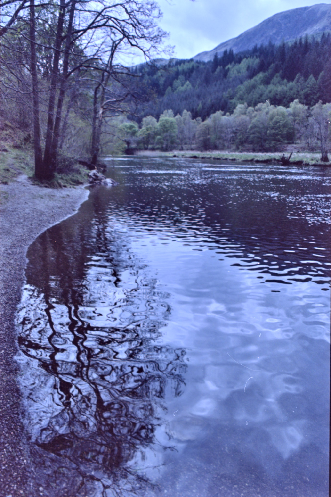
I’m not such a fan of 160 in anything other than really good daylight. Composition plays a part, too, and these images aren’t my best: the last few frames of the roll were taken at Burntisland.
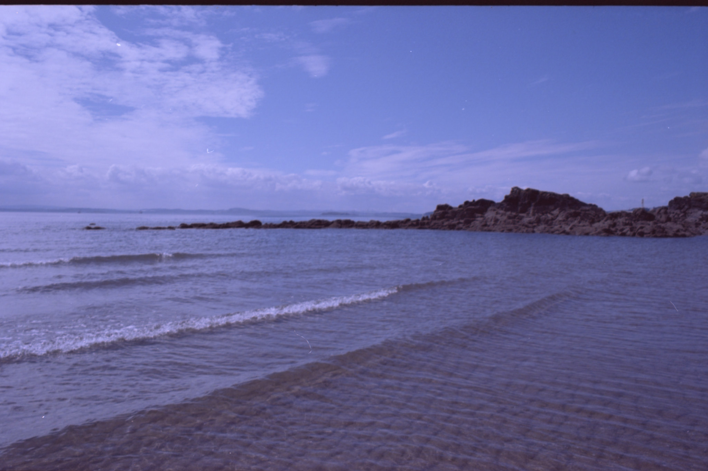